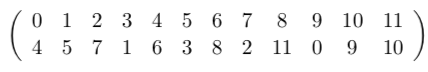

Tras la serie de artículos Serialismo y matemática que ha ido de septiembre a noviembre de 2019, Celia Rubio, su autora, me presentó un cuarto texto, Re-escalando música. Este texto constituye la columna de diciembre de 2019. Es de nuevo una inmensa fortuna contar con la colaboración de Celia Rubio. Dejamos al lector con el placer de su escritura y concepto.
En julio de 1921, tras haber ideado los fundamentos del dodecafonismo, Schoenberg hizo el siguiente anuncio a su discípulo Josef Rufer [7]:
He realizado un descubrimiento que asegurará la supremacía de la música alemana durante los próximos cien años.
Durante la mayor parte de su vida, Schoenberg creyó que el público general acabaría aceptando la música dodecafónica del mismo modo que se habían aceptado los distintos sistemas tonales desde hacía siglos. Para él, la naturalidad del sistema dodecafónico residía en que era un paso más en el proceso musical histórico: desde el contrapunto y el desarrollo motívico, practicado por los grandes maestros de la tradición alemana, hasta la disolución de la tonalidad, anticipada por la música postwagneriana e impresionista. Todo era parte de un continuo, del desarrollo de la historia de la música. En palabras de Schoenberg [6]:
Yo creo que la composición con doce sonidos, y la que muchos llaman erróneamente “música atonal”, no es el final de un viejo período, sino el comienzo de otro nuevo. Una vez más, como hace dos siglos, hay algo a lo que se llama anticuado; y una vez más, no se trata de ninguna obra en particular, [...] sino que otra vez sucede que es un estilo el condenado al ostracismo.
Tras la muerte de Schoenberg en 1951, y durante algunas décadas más, su sistema compositivo fue venerado por los compositores jóvenes más brillantes (véase [4]), pero pronto se desvaneció de las salas de conciertos. El serialismo siempre se consideró una música académica, difícil de entender, apenas musical sino teórica. La complejidad de percibir esta música meramente por su estructura formal impidió, y todavía impide, que se disfrutara más allá de su estudio. Schoenberg intentó eximirse de culpa y a su vez culpó al oyente, quien según él creyó que no se esforzaba lo suficiente [6]:
La composición con doce sonidos no tiene otra finalidad que la comprensión. A la vista de ciertos acontecimientos en la historia musical reciente, esto puede causar asombro, ya que las obras escritas en este estilo no han sido entendidas [...] Solo el compositor perfectamente preparado será quien componga para el oyente musical igualmente bien dispuesto.
Al contrario de lo que Schoenberg creía, incluso el oyente experto, el que describe T. W. Adorno en su “Introducción a la sociología de la música” [1], tiene grandes dificultades para distinguir auditivamente todos los elementos que caracterizan el serialismo. Somos capaces de retener, a lo sumo, motivos de seis o siete notas, pero no de doce [3]; mucho menos de reconocer si una serie es transformación de otra. ¿En qué medida afectan las reglas dodecafónicas al discurso sonoro de una pieza?
El dodecafonismo puede atribuirse el haber prescindido de algunas de las preconcepciones musicales más arraigadas, como la melodía, la consonancia o la tonalidad. Pero precisamente por eso es impopular, porque toma la disonancia y la pone al frente de toda la composición. Para Schoenberg, la aprobación del público no era el objetivo de su arte, y, de hecho, el desagrado colectivo era un signo del alto nivel artístico y espiritual [6]:
El valor de mercado es irrelevante para el valor intrínseco (de la música). Un juicio no cualificado puede como máximo decidir el valor de mercado —un valor que puede ser inversamente proporcional al valor intrínseco.
Ningún artista, ningún poeta, ningún filósofo y ningún músico, cuyo pensamiento se desenvuelva en la más alta esfera, habrá de descender a la vulgaridad para mostrarse complacientes con un eslogan tal como “Arte para todos”. Porque si es arte no será para todos, y si es para todos no será arte.
Sin embargo, el rechazo a no ser rechazado ha dejado de tener cabida en nuestro contexto artístico. El academicismo ya no es excluyente a la divulgación o a la búsqueda de belleza sensorial. De las técnicas serialistas se puede tomar aquello que es interesante intelectualmente e incorporarlo a otras técnicas.
Este es el experimento que he querido, con humildad, proponer: despojar al serialismo de uno de los elementos que provoca más rechazo: la disonancia extrema. Ya que esta proviene del cromatismo, el propósito del experimento es utilizar escalas que tengan menos intervalos de semitono para crear con ellas un pseudo-serialismo de menos notas.
Se han modificado las notas de varias obras dodecafónicas ya existentes, mientras que el ritmo, la duración, el timbre y las dinámicas, que siguen siendo producto de los compositores originales, se han dejado intactas. El propósito final es intentar conservar la estructura matemática subyacente renovando, en cambio, la percepción colectiva de estas músicas.
Para describir el proceso de modificación de las obras debemos definir lo que se entiende por escala y cuáles son las funciones óptimas entre escalas.
Una escala interválica es una secuencia ordenada de números naturales – una secuencia de intervalos entre notas – tales que la suma de todos ellos da 12. Así solo consideramos válidas las escalas equivalentes octava a octava. Esto debe ocurrir para poder considerar transformaciones de la escala cromática en escalas menores, aunque es generalizable a cualquier longitud. Diremos entonces que la escala cromática es la súper-escala de las sub-escalas con las que trabajaremos. Por ejemplo, la escala diatónica jónica (o escala mayor) tiene como secuencia de distancias (2, 2, 1, 2, 2, 2, 1) cuando se miden en semitonos.
Dada una escala interválica de longitud ℓ y una nota fija inicial, la secuencia de intervalos se convierte en una secuencia de notas de longitud ℓ+1. Se construye comenzando por la nota inicial y sumando cada intervalo para conseguir la nota siguiente.
Con la escala mayor y la nota Re se consigue (Re, Mi, Fa#, Sol, La, Si, Do#, Re), ya que es equivalente a (2, 2+2=4, 4+2=6, 6+1=7, 7+2=9, 9+2=11, 11+2=13, 13+1=14). Por construcción, la última nota debe ser equivalente a la primera, ya que en el último paso habremos sumado a la nota inicial todos los términos de la secuencia interválica, y por definición suman 12.
De esta forma, se puede definir una escala-k como el conjunto de notas generadas por una escala interválica desde la nota k. Por ejemplo, el conjunto anterior sería la escala-2 mayor; es decir, la escala de Re mayor. Una escala generada por una secuencia de intervalos con longitud ℓ tiene ℓ notas, ya que como la última es repetida no hay por qué considerarla. Su longitud ℓ ≤ 12, ya que una escala-k definida de esta forma siempre es un subconjunto de la escala cromática: Ek ⊆ ℤ∕(12). Al generalizarlo a cualquier súper-escala, habría que considerar las notas distintas según su escala o formular otras definiciones más adecuadas.
Una función a una escala-k es una función f que transforma cada nota de la escala cromática a un valor de la escala Ek. Entonces f : ℤ∕(12) → Ek* reduce las notas de una melodía a solamente la escala escogida, donde Ek* está formado por las notas de Ek pero quizás en octavas distintas. Las funciones a escalas se representan de la siguiente manera, con la primera fila representando el dominio de f (la escala cromática); la segunda su imagen (la escala con repeticiones y en distintas octavas, Ek*); y la tercera su secuencia interválica, que es de interés, ya que coincide con la escala interválica de partida salvo en los valores nulos.
El proceso verdaderamente interesante está en averiguar, dada una escala E, cuál es la mejor función que transforma melodías cromáticas en melodías en E. Estas son las funciones E-inducidas.
¿Cuáles serán las características de esas funciones óptimas? Deben ser sobreyectivas: si no, la música resultante tendría una escala más reducida de la deseada. Pero además deben conservar la estructura serial y deben conservar el parecido con la melodía original.
La mayor prioridad es conservar la estructura serial de las piezas; por tanto, todas las notas deben aparecer con la menor frecuencia posible, y se debe evitar jerarquías entre las notas en la medida de lo posible. Si |E| < 12, f no puede ser inyectiva, por lo que va a haber elementos repetidos en la imagen. Queremos la f que mejor distribuya esas repeticiones, que distribuya las notas de E a lo largo de la escala cromática.
Lo óptimo sería que todas tuvieran la misma frecuencia. Eso solo pasará cuando |E| divida a 12. Por ejemplo, si E = {a1,a2,a3,a4,a5,a6} (entonces |E| = 6), existen funciones tales que cada nota de la imagen se repite exactamente 2 veces. La siguiente función E-inducida f cumpliría la condición de buena distribución:
En cambio, si |E| no divide a 12 no hay funciones E-inducidas totalmente distribuidas. No existe una sola frecuencia que puedan compartir todas las notas de E. Sin embargo, sí se pueden encontrar dos frecuencias consecutivas, c y c + 1, tales que todos los elementos de E tengan o frecuencia c o frecuencia c + 1. Esto es lo más parecido a que todas tengan la misma frecuencia, y se va a probar a continuación que siempre es posible.
La situación es equivalente a que E se pueda dividir en dos subconjuntos disjuntos Q y R, con |Q| = q y |R| = r (entonces q + r = |E|), tales que la frecuencia de las notas en Q es c y la frecuencia de las notas en R es c + 1. En resumen, para probar que Q y R existen, debemos encontrar un c, un q y un r naturales para los que cq + (c + 1)r = 12. En efecto:
La siguiente tabla describe, para cada posible |E| en cada fila, la frecuencia óptima de sus elementos. Las columnas representan las frecuencias de los elementos, y los números de dentro son cada q y r (cuando es 0 no se escribe: no hay notas con esa frecuencia).
![|
----|-1--2--3--4--5--6-7--8--9--10--11--12--
1 | 1
-2--|----------------2----------------------
----|---------------------------------------
-3--|----------3----------------------------
-4--|-------4-------------------------------
-5--|----3--2-------------------------------
-6--|----6----------------------------------
7 | 2 5
-8--|-4--4----------------------------------
----|---------------------------------------
-9--|-6--3----------------------------------
-10-|-8--2----------------------------------
-11-|10--1----------------------------------
12 |12](Re-escalando-musica1x.png)
Estas funciones forman parte del numeroso conjunto de elementos musicales de máxima regularidad. Un ejemplo importante de ellos son los ritmos euclídeos —para más información ver [2].
Hay que pedir más requisitos a f para que no solo modifique las notas, sino que además las imágenes se parezcan lo máximo posible a sus preimágenes, a las notas originales. En esencia, lo que se busca es una escala a distancia mínima de la escala cromática en cuanto a unos criterios concretos.
La manera matemática de formalizar esos criterios es definir una métrica para estas funciones; es decir, una manera de medir la distancia entre ellas para poder compararlas. La distancia d entre dos funciones f y g cualesquiera, d(f,g), debe cumplir estas propiedades básicas:
1. d(f,g) ≥ 0 2. d(f,g) = 0⇐⇒f = g 3. d(f,g) = d(f,g) 4. d(f,g) ≤ d(f,h) + d(h,g)
La métrica que he escogido para comparar las funciones consiste en restar sus imágenes una a una, tomar el valor absoluto de esas diferencias y sumarlas: d(f,g) = ∑ i=011|f(i) - g(i)|. Esto nos da una idea de cómo de “lejos” se encuentran una de la otra, y cumple los axiomas de una métrica.
Nos interesa entonces encontrar la función más cercana a la función identidad, es decir, la que enviaría la escala cromática a sus mismas notas. Así se priorizan las funciones con el mayor número de puntos fijos —ya que el sumando en ese índice sería 0— , o que, al menos, se parezcan en su escala interválica asociada.
Puede ocurrir que con esta manera de medir quede más de una función a distancia mínima. Entre ellas, yo he escogido la más grave, y así, dada cualquier escala E, su función E-inducida queda unívocamente determinada.
En el enlace https://gitlab.com/dodecafonismo/f-inducida se encuentra el código en Haskell de un programa que, dado una escala, produce su función inducida óptima con las propiedades descritas anteriormente.
En el código se puede escoger entre o bien encontrar la mejor función que use solamente las notas de la subescala dada, o bien permitir transposiciones de ésta —que conservan, aun así, la escala interválica asociada— y que es a lo que llamo “inducir la raíz”. También permite cambiar el dominio, o superescala, y que no sea la cromática, aunque en ese caso puede que la métrica definida no devuelva resultados tan intuitivos.
Las escalas escogidas para este experimento son cuatro escalas de distintos tamaños y sonoridades; desde el sonido oriental hasta el occidental clásico, pasando por el jazz moderno y el impresionismo. Son la escala pentatónica, la escala de tonos enteros, la escala heptafónica de do mayor y la escala octotónica. Estas son las funciones inducidas de dichas escalas según el algoritmo:
Ahora se describirán las obras que pasarán por la modificación. Para abarcar distintos estilos compositivos y hacer este estudio más amplio, he escogido obras de los tres principales compositores dodecafónicos: Schoenberg, Berg y Webern.
Sin embargo, no se han escogido obras de compositores posteriores ni serialistas integrales. Uno de los motivos es porque interesa en este estudio la relación entre los sonidos: no se modifican más que las alturas de las notas, y por tanto no se tiene en cuenta el resto de elementos musicales. Que estén compuestos serialmente no afecta a las conclusiones de este experimento.
Por otro lado, los compositores posteriores a Schoenberg todavía no han pasado al dominio público. Eso impide, por desgracia, que se pueda trabajar libremente con su música.
Por último, el hecho de que cada nota tenga su propia dinámica, su propia articulación o su propio timbre hace de las obras serialistas integrales difíciles de manipular. Además, como los audios están hechos mediante ordenador y no con intérpretes reales, la calidad y la intención musical de estas partituras tan complicadas nunca podrían plasmarse a la perfección.
La primera obra que pasará por el algoritmo de modificación serial es la Suite para piano, Op. 25 de Schoenberg. Un análisis de esta pieza y de su contexto histórico se puede encontrar en [5].
Su serie principal es:

La segunda obra es un arreglo para soprano y piano de una de las arias más destacadas de la segunda ópera de Alban Berg, Lulu. El libreto de la obra está basado en dos tragedias de Frank Wedekind: “El espíritu de la tierra” y “La Caja de Pandora”.
El aria, llamada Lied der Lulu, es parte de una dramática disputa entre Lulu y su marido por las infidelidades de ella, que acaba con el homicidio accidental de él.
La serie de Lulu es:
La tercera, de 1936, es la única obra publicada de Anton Webern para piano solo: Variationen für Klavier, Op. 27, y se compone de tres movimientos: Sehr mässig, Sehr schnell y Ruhig fliessend.
Su serie principal es:
He creado una página web online que transforma cada nota de una partitura a cualquier nota requerida, una a una. Este software sirve para no tener que modificar a mano las partituras del experimento, pero también puede servir para otros propósitos. Por ejemplo, para cambiar una partitura de mayor a menor, o viceversa.
El programa solo admite partituras con formato Archivo Musescore sin Comprimir (.mscx) del software libre Musescore. En caso de tener la partitura en otro formato, debe abrirse en Musescore y guardarse en el formato correcto. Está escrita en Elm y el código puede encontrarse aquí.
La aplicación web se encuentra en el siguiente enlace: https://modificaciones.netlify.com/. Sus instrucciones de uso se encuentran al final de la página web.
Todas las conclusiones que se pueden extraer de este experimento son enteramente subjetivas. El objetivo de realizarlo es poder seguir investigando con las propiedades matemáticas de la música, y analizar el impacto emocional que estas pueden causar.
No se puede afirmar que la transformación mejore o empeore ninguna obra. En todo caso podemos interpretar qué transformaciones tienen un determinado sentido musical o estético, dependiendo de la escala utilizada o del estilo con el que estén compuestas. Tampoco debemos olvidar que el cromatismo siempre aportará a las obras una dimensión añadida, un elemento extra que ha impulsado gran parte de la innovación en la historia de la música. Quitarlo por completo es, en realidad, retroceder en la evolución del arte.
En general, las transformaciones hexatónica y octotónica siguen conservando mucho del cromatismo que tiene la partitura original. Siguen sonando ajenas al oído tonal del oyente medio. Vamos a comentar algunas de las impresiones que generan las otras dos transformaciones en cada una de las obras, aunque dejaremos al lector que forme su propia opinión.
El estilo compositivo de Berg busca, en su mayor parte, acercarse a las formas tonales; maneja la falta de tonalidad serialista sin deshacerse de muchos elementos de la tradición musical. Sus melodías son fluidas y su fraseo inicia a conversar. Así, la transformación pentatónica (5) queda, quizás, algo simplista y repetitiva, y es en cambio la heptatónica (7) la que nos traslada a sonoridades más familiares.
https://soundcloud.com/celiarubio/sets/berg-lied-der-lulu
El estilo compositivo de Webern es rompedor y enigmático. Tanto fue así que su música sirvió de inspiración para el serialismo integral de los años 50. Sus melodías suenan fragmentadas y están llenas de intervalos de más de una octava. Es, por tanto, muy difícil que cualquier transformación que conserve similitudes melódicas con la partitura original pueda acercarse a músicas más convencionales. La esencia de esta obra está precisamente en su peculiaridad.
https://soundcloud.com/celiarubio/sets/webern-op27-variations
El estilo compositivo de Schoenberg en la Suite es tradicional, aunque busca nuevas sonoridades. Su principal objetivo es conservar la estructura formal anterior, y por ello lo único que aleja a la obra es el uso del serialismo en la altura de las notas.
La obra es, en general, más armónica que melódica, ya que pretende simular texturas instrumentales del periodo barroco. Además, al centrarse tanto en la formalidad de la pieza aporta una riqueza separada del uso del serialismo. Por ello, la transformación pentatónica (5) no acaba siendo monótona sino muy sugestiva.
Por otro lado, la elección concreta de la función transformativa, que hace predominar las notas do y sol —que aparecen en la nueva serie una vez más que el resto de notas— provoca que, en muchos casos, la obra simule estar en do mayor. Como en la partitura original predomina el intervalo de tritono re ♭ – sol, la transformación da peso al intervalo de quinta justa, que es la base de la armonía tradicional.
La transformación heptatónica sigue dejando alguna disonancia debido a la existencia de semitonos entre las notas mi – fa y si – do, y al tritono en fa – si. Al ser una obra ampliamente textural, muchos de estos intervalos aparecen con frecuencia.
https://soundcloud.com/celiarubio/sets/schoenberg-op25-1-prelude
https://soundcloud.com/celiarubio/sets/schoenberg-op25-2a-gavotte
https://soundcloud.com/celiarubio/sets/schoenberg-op25-2b-musette
https://soundcloud.com/celiarubio/sets/schoenberg-op25-3-intermezzo
https://soundcloud.com/celiarubio/sets/schoenberg-op25-4a-menuet
https://soundcloud.com/celiarubio/sets/schoenberg-op25-4b-trio
https://soundcloud.com/celiarubio/sets/schoenberg-op25-5-gigue
[1] T.W. Adorno. Disonancias. Introducción a la sociología de la música. Continuum International Publishing Group Ltd., 1973. https://books.google.es/books?id=6uBiDwAAQBAJ.
[2] Paco Gómez. Ritmos euclídeos y ritmos equilibrados. http://vps280516.ovh.net/divulgamat15/index.php?option=com_content&view=article&id=17815:89-marzo-2018-ritmos-euclideos-y-ritmos-equilibrados&catid=67:ma-y-matemcas&directory=67, marzo de 2018. Consultado en octubre de 2019.
[3] George A. Miller. The Magical Number Seven, Plus or Minus Two: Some Limits on Our Capacity for Processing Information. Psychological Review, 63, 1956. http://psychclassics.yorku.ca/Miller/.
[4] Celia Rubio Madrigal. Serialismo y matemáticas - II. Divulgamat, octubre de 2019. http://vps280516.ovh.net/divulgamat15/index.php?option=com_content&view=article&id=18227:101-octubre-2019-serialismo-y-matematicas-ii&catid=67:ma-y-matemcas&directory=67.
[5] Celia Rubio Madrigal. Serialismo y matemáticas - I. Divulgamat, septiembre de 2019. http://vps280516.ovh.net/divulgamat15/index.php?option=com_content&view=article&id=18209:100-septiembre-2019-serialismo-y-matematicas-i&catid=67:ma-y-matemcas&directory=67.
[6] Arnold Schoenberg. Style and Idea. http://music.ucsc.edu/sites/default/files/14.SchoenbergTwelveTone.pdf, 1950.
[7] H. H. Stuckenschmidt. Schoenberg: his life, world, and work. Calder, 1977. https://books.google.es/books?id=ApwZAQAAIAAJ.